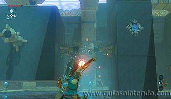

Puedes entrar en él desde que llegas a la región de la torre de Lanayru. Está situado al sur de la región zora, debes cruzar el río para encontrarlo. Al llegar a él verás que está rodeado de pinchos, sin embargo, tienes un camino entre ellos para llegar a la entrada.
El objetivo aquí dentro es encender las 5 antorchas, en el momento que lo hagas se abrirá la puerta de entrada al altar. Comienza disparando una flecha de fuego a las dos antorchas que están juntas en el lado derecho del bloque central.

Después mueve el bloque golpeando el mecanismo que hay delante para que el cubo cambie de posición, tienes que hacer que el chorro de agua apunte a un lado que no haya antorchas (abajo, o hacia el frente). También debes ver que ninguna antorcha quede bajo el agua. Dispara a la antorcha que queda a la izquierda del bloque (a la que le daba el chorro de agua) y abrirás la puerta de salida.

Antes de irte puedes coger dos cofres (contienen Ópalo y un Arco zora). Para ello, ve tras al muro más lejano y mira arriba, verás dos plataformas de madera. Puedes quemarlas con más flechas de fuego y caerán a tus pies.
Cuando llegues al altar podrás examinarlo para obtener un símbolo de valía.